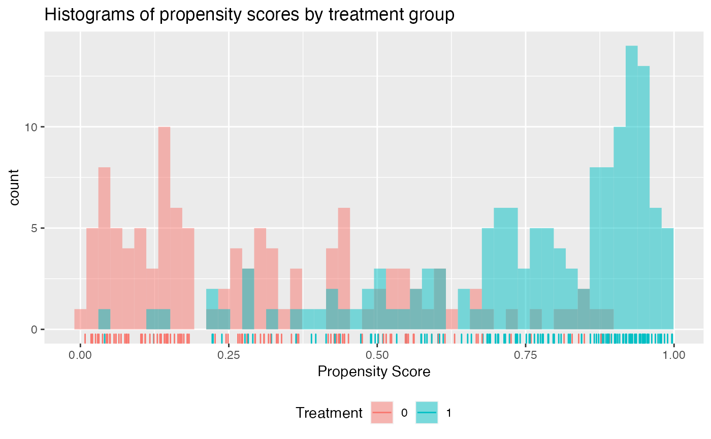

Check propensity score overlap
Results in a plot to check whether the propensity score has adequate overlap between treatment groups
check.overlap(x, trt, propensity.func, type = c("histogram", "density", "both"), bins = 50L)
Arguments
| x | The design matrix (not including intercept term) |
|---|---|
| trt | treatment vector with each element equal to a 0 or a 1, with 1 indicating treatment status is active. |
| propensity.func | function that inputs the design matrix x and the treatment vector trt and outputs
the propensity score, ie Pr(trt = 1 | X = x). Function should take two arguments 1) x and 2) trt. See example below.
For a randomized controlled trial this can simply be a function that returns a constant equal to the proportion
of patients assigned to the treatment group, i.e.:
|
| type | Type of plot to create. Options are either a histogram ( |
| bins | integer number of bins for histograms when |
Examples
library(personalized) set.seed(123) n.obs <- 250 n.vars <- 15 x <- matrix(rnorm(n.obs * n.vars, sd = 3), n.obs, n.vars) # simulate non-randomized treatment xbetat <- 0.25 + 0.5 * x[,11] - 0.5 * x[,12] trt.prob <- exp(xbetat) / (1 + exp(xbetat)) trt01 <- rbinom(n.obs, 1, prob = trt.prob) # create function for fitting propensity score model prop.func <- function(x, trt) { # fit propensity score model propens.model <- cv.glmnet(y = trt, x = x, family = "binomial") pi.x <- predict(propens.model, s = "lambda.min", newx = x, type = "response")[,1] pi.x } check.overlap(x = x, trt = trt01, propensity.func = prop.func)# now add density plot with histogram check.overlap(x = x, trt = trt01, type = "both", propensity.func = prop.func)# simulated non-randomized treatment with multiple levels xbetat_1 <- 0.15 + 0.5 * x[,9] - 0.25 * x[,12] xbetat_2 <- 0.15 - 0.5 * x[,11] + 0.25 * x[,15] trt.1.prob <- exp(xbetat_1) / (1 + exp(xbetat_1) + exp(xbetat_2)) trt.2.prob <- exp(xbetat_2) / (1 + exp(xbetat_1) + exp(xbetat_2)) trt.3.prob <- 1 - (trt.1.prob + trt.2.prob) prob.mat <- cbind(trt.1.prob, trt.2.prob, trt.3.prob) trt <- apply(prob.mat, 1, function(rr) rmultinom(1, 1, prob = rr)) trt <- apply(trt, 2, function(rr) which(rr == 1)) # use multinomial logistic regression model with lasso penalty for propensity propensity.multinom.lasso <- function(x, trt) { if (!is.factor(trt)) trt <- as.factor(trt) gfit <- cv.glmnet(y = trt, x = x, family = "multinomial") # predict returns a matrix of probabilities: # one column for each treatment level propens <- drop(predict(gfit, newx = x, type = "response", s = "lambda.min", nfolds = 5, alpha = 0)) # return the probability corresponding to the # treatment that was observed probs <- propens[,match(levels(trt), colnames(propens))] probs } check.overlap(x = x, trt = trt, type = "histogram", propensity.func = propensity.multinom.lasso)